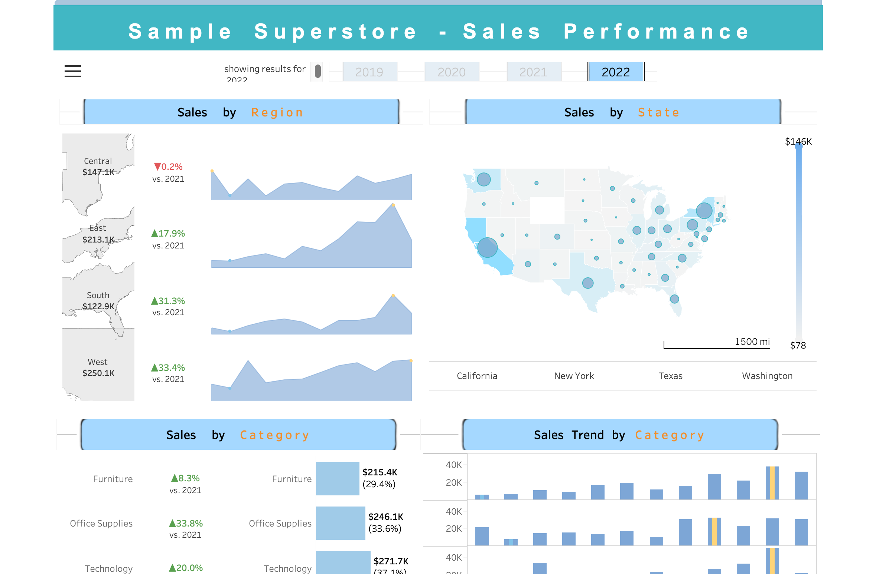

An interactive dashboard
1 Source Data
A sales data from tabuleau community.
2 Create independent worksheet
2.1 Headers
2.2 Sales trend, map, net increast/decrease
2.3 Tooltips
2.4 Sales by category/sub-category/segmentation
3 Create a dashboard
3.1 Put each element into proper container
Container can be horizontal or vertical.
3.2 Adjust size, ourter/inner paddings
4 Make some elements interactive
